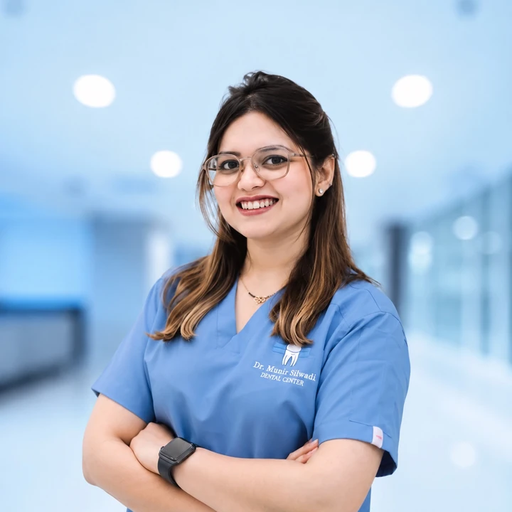
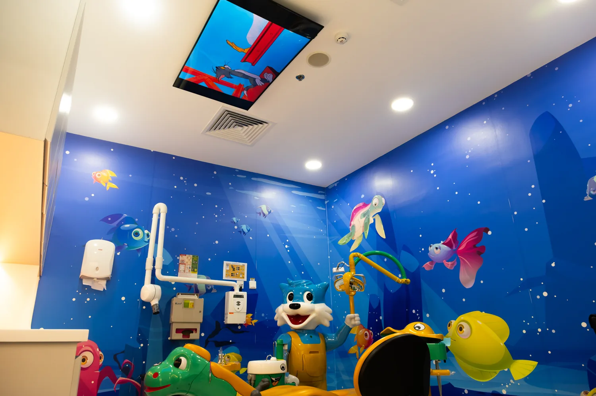

Anxious kids
Behaviour guidance for fearful, uncooperative and special healthcare needs children.
DHA + DOH licensed Specialist Pediatric & Preventive Dentist practicing across Dubai and Abu Dhabi.
Locations & booking

Dr. Kashmira Pawar is a Specialist Pediatric & Preventive Dentist with over 11 years of clinical experience across the UAE and India. Her work spans preventive dentistry, minimally invasive caries care, pediatric endodontics, trauma, special healthcare needs and early orthodontic intervention.
A major part of her practice is helping anxious children feel safe enough to build trust with dentistry. Behaviour guidance, parent communication and nitrous oxide conscious sedation are part of that approach when appropriate.
Behaviour guidance for fearful, uncooperative and special healthcare needs children.
Fluoride, sealants, SDF, minimally invasive care and practical parent education.
Pulp therapy, trauma care, Myobrace, habit correction and interceptive orthodontics.
Choose from her current UAE practice locations.